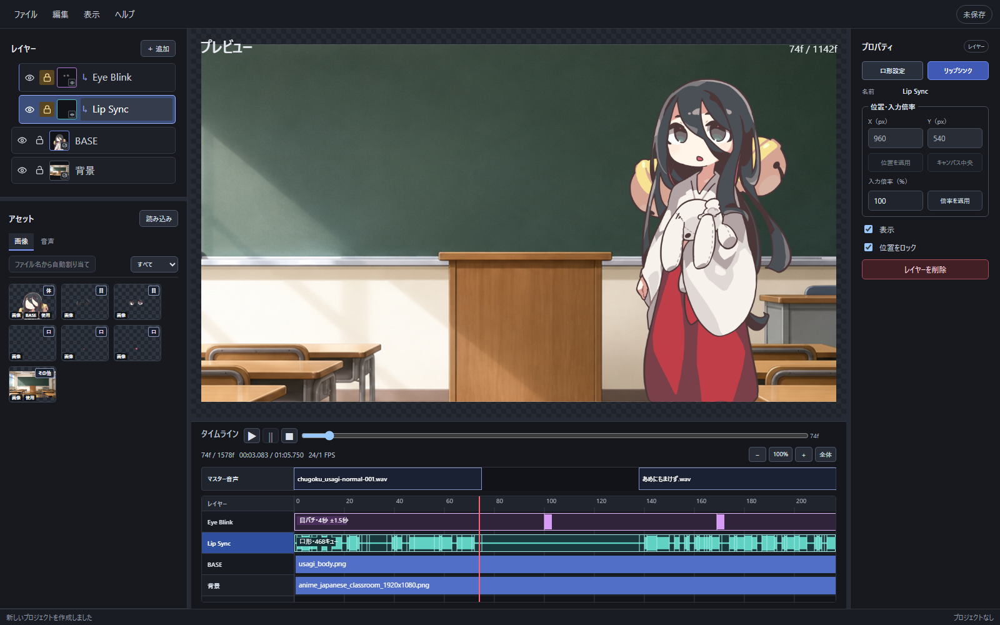
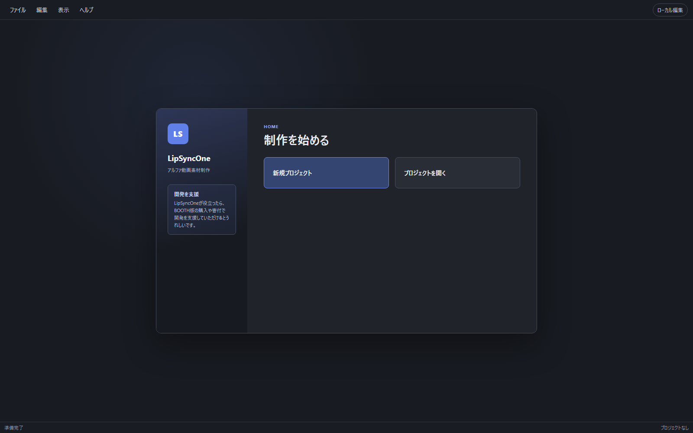
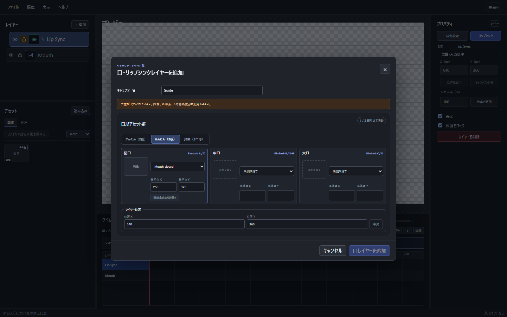
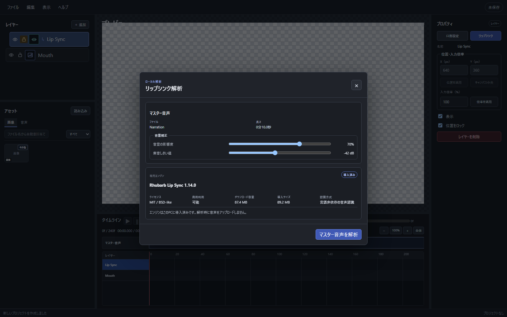
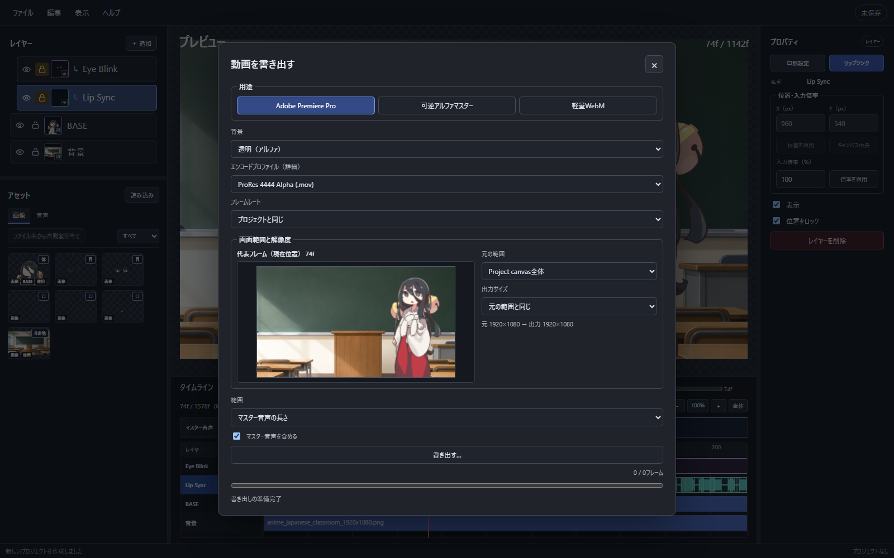

口画像2枚から始められる
閉じ口と開き口の2枚から始められます。必要に応じて、3枚やRhubarb A〜H/Xの9口形にも広げられます。
Windows向けデスクトップアプリ
キャラクターの差分画像と音声から、口パクや目パチのついた動画を作れるアプリです。背景を透明にしたまま書き出せるので、Premiere Proなどの編集ソフトで素材として使えます。

POSITION
編集ソフトで口の画像を一枚ずつ並べなくても、差分画像と音声から口パクと目パチをまとめて作れます。
背景を透明にして書き出した動画は、いつもの編集ソフトに重ねて、字幕やカット、効果と組み合わせられます。
Live2Dや総合動画編集ソフトの代わりではありません。立ち絵の差分を使った、シンプルなアニメーション素材づくりに向いています。
FEATURES
閉じ口と開き口の2枚から始められます。必要に応じて、3枚やRhubarb A〜H/Xの9口形にも広げられます。
音声から口の動きを推定するオープンソースのRhubarb Lip Sync 1.14.0を使います。解析はPC内で行い、音声を外部へ送りません。
開いた目と閉じた目の2枚から使えます。中割を加えれば、よりやわらかなまばたきになります。間隔やばらつきも調整できます。
台詞や無音区間、画像の位置・大きさ、レイヤー順を保存できます。あとから開き直して調整できます。BGMなどの音声ミックスは仕上げ先で行います。
口や目を全身画像と同じキャンバスサイズで用意すると、位置を合わせやすくなります。小さく切り出した透過PNGも、位置を調整して配置できます。
Premiere Proなどへ、そのまま動画素材として渡せます。ProRes 4444、FFV1、lossless VP9に対応しています。
WORKFLOW
HOMEから新規プロジェクトを作成し、透過PNGと音声をアセットへ読み込みます。

少ない画像から始め、必要に応じて3枚・9口形へ広げられます。透明余白を除いた小型PNGも配置できます。

音量の影響度と無音しきい値を確認して解析します。結果は口形キューとしてタイムラインへ反映されます。

用途、背景、範囲、解像度を選び、代表フレームを確認してから動画を生成します。

EXPORT
透明動画を書き出したあと、形式、フレーム数、音声、透明度をアプリが確認します。
| 用途 | 形式 |
|---|---|
| Adobe Premiere Pro | ProRes 4444 AlphaMOV / PCM |
| 可逆アルファマスター | FFV1MKV / FLAC |
| 軽量アルファ動画 | lossless VP9WebM / Opus |
| Windowsでの確認用 | H.264 カラーキーMP4 / AAC・非可逆 |
LOCAL FIRST
FOR
NOT FOR
DOWNLOAD
Windows x64向けv0.1.4 ベータ版。インストーラー版とポータブル版を公開しています。
現在はstudio-juhの自己署名による暫定配布です。別のPCではWindows SmartScreenが表示される場合があります。